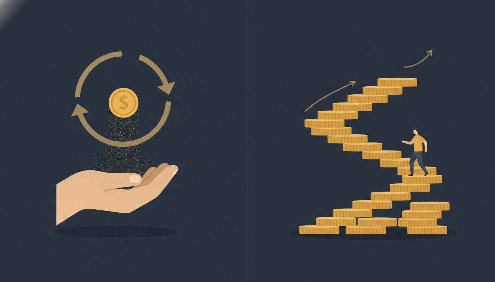
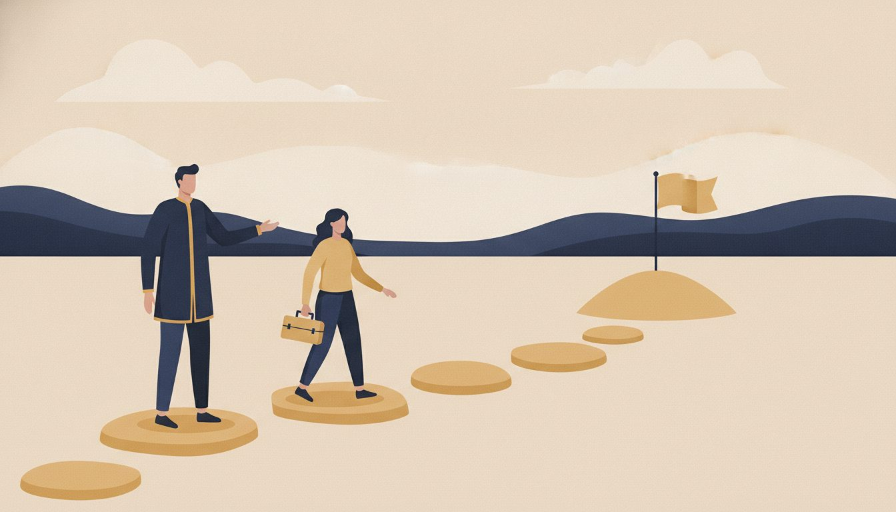
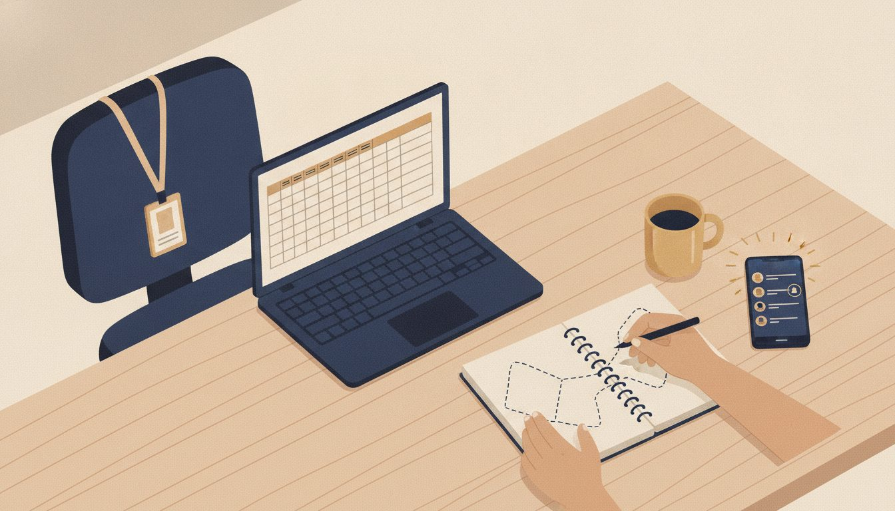
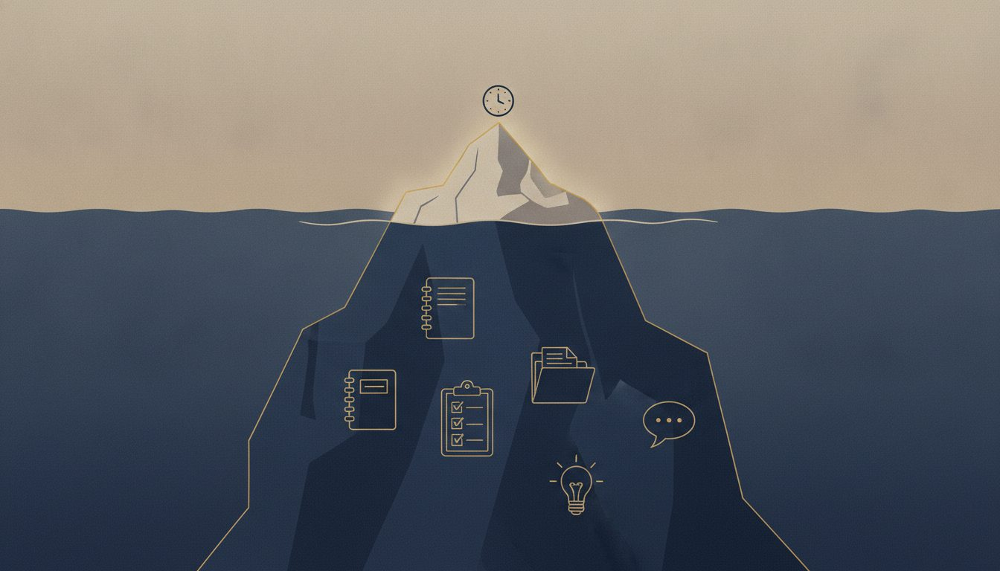

Узнаёте себя?
Чаще всего к нам приходят люди с большим бэкграундом.
Несколько корпоративных треков, где вы успели поработать и с людьми, и с продажами, и с управлением, может быть, второе высшее по психологии или коучинговое образование, которое получали, чтобы наконец ответить себе на вопрос «кто я и про что я». Экспертизы много, в каждой из прошлых жизней что-то есть, и непонятно, за что сейчас хвататься: в какой нише себя позиционировать, что именно предлагать и с чего вообще начать.
При этом у многих основная работа никуда не делась, и хочется развивать свою практику параллельно, не увольняясь и не рискуя, но не хватает понимания, как это устроено по шагам. А те, кто уже пробовал консультировать, знают и другую сторону: клиенты приходят случайно, по рекомендации или из блога, вы делитесь опытом, человек благодарит и уходит, а дальше непонятно, был ли результат и можно ли на этом что-то спланировать.
Посмотрите, что из этого про вас:
- опыта много, в нескольких сферах, и непонятно, как собрать его в один понятный продукт;
- вы в найме и хотите развивать свою практику параллельно, но не знаете, с чего начать;
- вы уже консультируете, но клиенты приходят случайно, и доход не спланировать;
- раньше получалось, сейчас не получается, и вы не можете выйти из состояния сбитого лётчика;
- клиенты спрашивают, какой будет результат и за что конкретно они платят, и вам сложно на это ответить;
- вы проводите бесплатные разборы по часу-два, слышите «спасибо, всё поняла», и на этом всё заканчивается;
- вы чувствуете, что продешевили: клиент получил очень много, а заплатил как за час разговора.
Что общего у всех этих ситуаций
Ситуации разные, а причина, если присмотреться, одна: опыт есть, но он не капитализирован. Давайте разберёмся, чем монетизация отличается от капитализации, потому что вся история именно в этом.
Монетизация это когда вы продали консультацию сегодня, получили деньги завтра, и всё, нужно придумывать что-то новенькое.
Капитализация это когда вы один раз сделали определённые действия со своей экспертизой, со своим бэкграундом, с тем, что вы годами делали в найме или во фрилансе, и дальше это работает на вас и через полгода, и через год, и через десять лет.
Разовая консультация такого накопительного эффекта не даёт в принципе, как бы хорошо вы её ни проводили, а когда продукта нет вообще, капитализировать просто нечего.

И есть второй момент, который всё это усиливает. Рынок за последний год очень сильно поменялся, и сейчас мы живём во время культа результата. Клиент приходит и спрашивает: а какой будет результат, за что конкретно я плачу, что будет через месяц, что будет через два. Разовой консультацией на этот вопрос ответить невозможно, потому что после одной встречи результат либо случается, либо нет, и вы на это уже никак не влияете.
Эксперт, который умеет работать с результатом, чувствует себя в рынке прекрасно. Эксперт, который не умеет, видит вокруг кризис.
Получается, нужен формат, который решает сразу обе задачи: превращает ваш опыт в продукт с накопительным эффектом и при этом позволяет обещать клиенту результат. Такой формат есть, и он старше всех остальных. Это менторинг.
Что такое менторинг и почему именно он
Менторинг это передача вашего опыта по определённой методологии. Не разовый разговор, а трек из нескольких встреч, по которому вы ведёте человека к результату, причём к такому, который можно заранее описать, оцифровать и даже прописать в договоре.
Главное отличие от всего остального в том, что результат в менторинге клиент делает своими руками: вы даёте инструменты, упражнения и правильные вопросы, он действует, и в конце трека у него есть новый навык и реальное изменение, а у вас есть кейс. Вот так разовая консультация превращается в продукт, а вопрос «какой будет результат» перестаёт быть страшным.

Важно понимать, чем менторинг не является.
- Не коучинг, где мы работаем преимущественно вопросами.
- Не консалтинг, где мы приходим к клиенту, внедряем решение своими руками, нанимаемся к нему фактически в штат и потом остаёмся крайними, когда он эту работу обесценивает.
- Не терапия, ментор в хорошем варианте не контрактуется на травмы и детство.
- Не наставничество по старинке в формате «смотри, как делаю я, и повтори».
Менторинг исторически вообще первая форма обучения, наши далёкие предки у костра в пещере именно так передавали друг другу опыт, и всё, что мы сейчас видим в образовательном рынке, наросло на этом фундаменте.
Почему с него стоит начинать, а не с курса или клуба
Логичный вопрос: если уж делать продукт, почему не курс, не клуб, не что-то посерьёзнее? Потому что когда эксперт сразу идёт делать курс или клуб, он, как правило, распаковывает слишком много, и получается не до конца связанная экосистема, которая монетизируется в моменте, а потом устаревает.
Менторинг же не требует записывать уроки, собирать команду и строить инфраструктуру, он собирается из того опыта, который у вас уже есть, и его совершенно необязательно делать запуском, это может быть постоянный формат работы с клиентами параллельно с основной работой. Если вы сейчас в найме, это самый реалистичный способ начать зарабатывать на своей экспертизе, никуда не увольняясь.

Первые клиенты для менторинга у вас, скорее всего, уже есть, потому что никто не стартует с нуля. У каждого есть бывшие коллеги, люди, которым вы когда-то помогли, те, кто интересовался вашей консультацией, но тогда не купил, участники ваших встреч, подписчики, пусть даже их немного. Это ваши текущие активы, и с ними почти никто не работает, а именно с них проще всего начать.
А дальше на этом фундаменте вырастает всё остальное: групповой менторинг, премиальные программы, курс, клуб, роль советника. Все большие продукты, как правило, тестируются именно через менторский формат, поэтому с него и стоит начинать.
Откуда берутся плюс 30% к доходу
Теперь про цифру из заголовка, потому что она не с потолка.
- Вы продаёте не час своего времени, а трек с понятным результатом, и чек за такую работу совсем другой.
- Вы начинаете правильно считать стоимость: не только встречи, но и подготовку, работу между сессиями и свои наработки, которые клиент получает просто потому, что пришёл к вам. Если мы не можем составить смету трека, то наш чек это просто фантазия, так большинство экспертов показывают клиенту только верхушку айсберга.
- Клиент остаётся с вами дальше после хорошо проведённого трека, рекомендует вас и даёт кейс, который продаёт без вашего участия.
Поэтому менторинг работает на любых активах, хоть на маленькой базе, хоть на большой.

Елена пришла уже с опытом и пониманием, с кем хочет работать, но без упакованного продукта. За полтора месяца обучения она провела пять менторских треков, два из них коммерческих, заработала первые 100 тысяч рублей на новом формате, а затем перешла в групповые программы.
Что с этим делать дальше
Можно закрыть эту страницу и ещё какое-то время думать, подходит ли вам этот формат. Но перенишеваться лёжа на диване невозможно: ответ на вопрос, какой именно продукт собрать из вашего опыта, с каких контактов начать и сколько за это брать, появляется только тогда, когда вы раскладываете свою конкретную ситуацию с человеком, который уже видел десятки таких историй. В статье это не разобрать, слишком разные у всех ниши и бэкграунды.
Поэтому мы сделали диагностическую консультацию. Это 30 минут один на один с опытным экспертом нашей школы, который работает по методике Александры. Он посмотрит на ваш опыт и текущую ситуацию и скажет:
- какой менторский трек из этого можно собрать;
- на каком этапе вы сейчас находитесь;
- что имеет смысл делать следующим шагом, чтобы развиваться в менторинге.
Если увидим, что вам подходит наша программа, расскажем о ней и о том, как присоединиться к текущему потоку. Если не подходит, тоже скажем честно.
Приходите с конкретикой: чем занимаетесь, кому и как сейчас помогаете, что хотите изменить. Так разговор получится предметным.